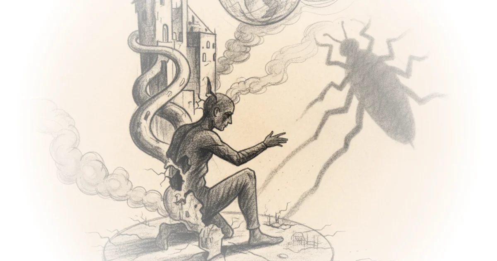

Sora 2 - It will only get more realistic from here AI Explained · AI Explained ·Oct 1, 2025 · 15 min read
I Read "No Country for Old Men", Here's What the Movie Didn't Tell You: Tom van der Linden · Like Stories of Old ·Sep 30, 2025 · 17 min read · Writing & Craft
Is Witchcraft Going Mainstream? Andrew Henry · Religion For Breakfast ·Sep 30, 2025 · 45 min read · Faith
What Everyone Gets Wrong About Elves in Iceland Andrew Henry · Religion For Breakfast ·Sep 26, 2025 · 18 min read · Faith
ChatGPT Can Now Call the Cops, but 'Wait till 2100 for Full Job Impact' - Altman AI Explained · AI Explained ·Sep 16, 2025 · 11 min read
Movie Monologues that Radicalized my Moral Philosophy Tom van der Linden · Like Stories of Old ·Sep 16, 2025 · 19 min read · Philosophy
I Took Bernie Into Deep Country. Can He Win Them Over? More Perfect Union · More Perfect Union ·Sep 15, 2025 · 15 min read · Political Strategy
Artist Grace Weaver: "I'm drawing in painting." Louisiana Channel · The Louisiana Channel ·Sep 4, 2025 · 12 min read
Redditors are Obsessed with Faking Their Own Death Devin Stone · LegalEagle ·Sep 2, 2025 · 23 min read · Law & Rights
How to Take Notes like a Literature PhD Close Reading Poetry · Close Reading Poetry ·Jul 30, 2025 · 16 min read
Yancey Strickler: Dark Forest Theory of the Internet Doom Scroll · Doom Scroll ·Jul 29, 2025 · 41 min read · Political Strategy
The Most Underrated Type of Villain Tom van der Linden · Like Stories of Old ·Jul 17, 2025 · 14 min read · Writing & Craft
Tim Heidecker: Irony, Comedy and the Internet Doom Scroll · Doom Scroll ·Jul 15, 2025 · 62 min read · Political Strategy
Episode #232 ... Byung Chul Han - The Crisis of Narration Stephen West · ·Jul 8, 2025 · 30 min read · Philosophy
This is Hollywood's Liberal Fantasy, and it's Falling Apart Tom van der Linden · Like Stories of Old ·Jun 28, 2025 · 27 min read · Political Strategy
The one true philosophical theory of names Jeffrey Kaplan · Jeffrey Kaplan ·Jun 26, 2025 · 24 min read · Philosophy
Episode #228 ... Albert Camus - Kafka and The Fall Stephen West · ·May 12, 2025 · 33 min read 
Is Labour Doomed? | Novara Debates w/ Ash Sarkar, Michael Walker & Aaron Bastani Novara Media · Novara Media ·May 7, 2025 · 65 min read
Anthony Fantano: Music, Art and Radical Politics Doom Scroll · Doom Scroll ·Apr 29, 2025 · 58 min read · Political Strategy
Adam Friedland: Behind the Adam Friedland Show Doom Scroll · Doom Scroll ·Mar 4, 2025 · 56 min read · Political Strategy
Episode #223 ... Religion and the duck-rabbit - Kyoto School pt. 3 Stephen West · ·Mar 3, 2025 · 34 min read